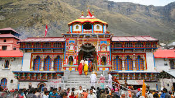

Uttarakhand is famous for Char Dham Yatra, which literally means 'Journey to the Four Centres'.
Badrinath

Badrinath is the abode of Lord Vishnu, who is called 'Badri Vishal', Badri the Big One. The priests of Badrinath are from the southernmost part
of India, i.e. Kerala. This is according to the rules laid down by Adi Sankara. Badrinath remains out of bounds for pilgrims for 6 months a
year, from October to May.
Kedarnath
Kedarnath is the abode of Lord Shiva. Kedarnath is one of the 12 Jyotirlingams of India and the only one in the Uttarakhand. While there is a
motorable road to Badrinath, Kedarnath could only be reached by foot. The 14 km trek begins from Gaurikund. After the 2013 Himalayan
floods, the trek currently is of more than 18 km due to washing away of trekking paths.
Gangotri
Gangotri is the origin of the holy river Ganga. River Ganga is revered as a mother throughout India. Gangotri is a place which is not only the
origin of Ganga but also where Ganga flows in a northerly direction, hence the name 'Gangotri'. The river Ganga flows out from the melting
Gangotri Glacier.Close to the temple is Bhagirath Shila, which according to the Hindu philosophy is the place where Bhagirath did penance for
5500 years to seek the blessings of Mother Ganga and requested her to descend to the Earth from her heavenly abode to cleanse the sins of his ancestors.
Yamunotri
Yamunotri is the origin of the holy river Yamuna. A temple dedicated to the holy river Yamuna is situated at the place. The actual origin
of the river is the Yamunotri Glacier.